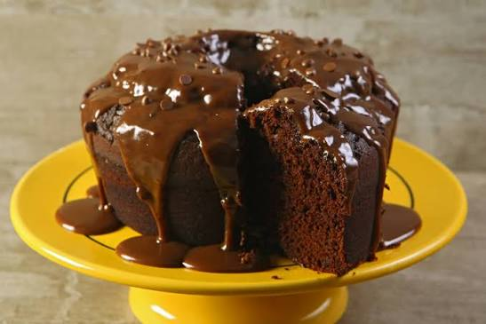
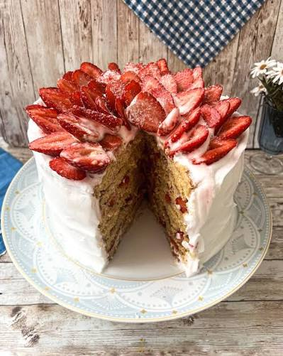
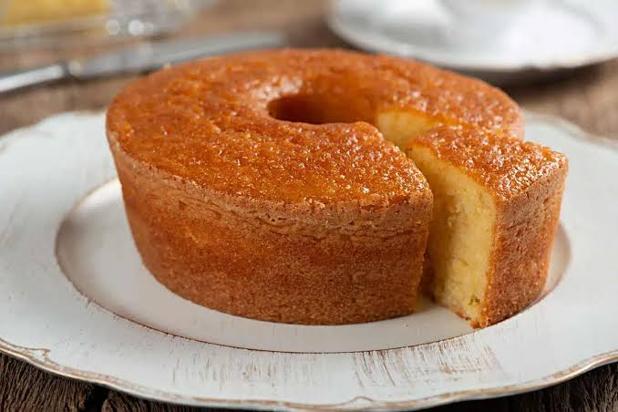
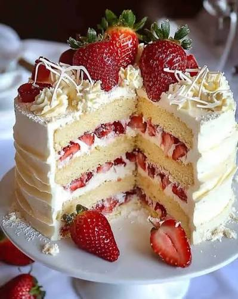
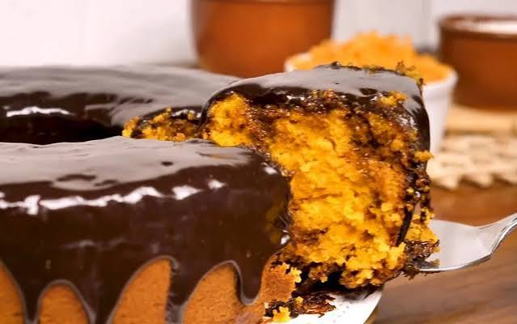
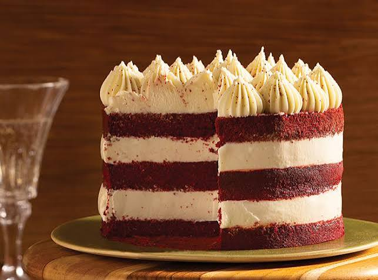

Bolo de Chocolate
Massa molhadinha de cacau com uma camada generosa de recheio e cobertura de brigadeiro caseiro.
A Bolos da Neide é uma confeitaria artesanal nascida da paixão por transformar momentos especiais em lembranças inesquecíveis através do sabor. Especializada em bolos caseiros, tortas recheadas e doces personalizados para festas, a empresa preza pelo carinho em cada detalhe, utilizando receitas tradicionais e ingredientes selecionados. Com um atendimento acolhedor e um toque genuinamente caseiro, a Neide garante que cada encomenda leve à mesa dos seus clientes o verdadeiro gosto do amor em forma de doce.
Conheça nossos

Massa molhadinha de cacau com uma camada generosa de recheio e cobertura de brigadeiro caseiro.

Massa leve e fofinha recheada com creme aveludado e morangos frescos selecionados a mão.

Receita tradicional de vó, super fofinho e quentinho, perfeito para acompanhar o café da tarde.

Pão de ló macio com recheio cremoso de Leite Ninho e pedaços suculentos de morango.

O clássico bolo de cenoura bem fofinho, coberto com uma casquinha crocante de chocolate.

Massa aveludada em tom vermelho-rubi com um toque sutil de baunilha e recheio leve de cream cheese.
| ID | Sabor | Tempo de preparo | Valor |
|---|---|---|---|
| 01 | Chocolate | 2 horas | R$ 80,00 |
| 02 | Bolo de Morango | 2h30 min | R$ 95,00 |
| 03 | Bolo de Fubá | 1 hora | R$ 45,00 |
| 04 | Bolo de Ninho com Morango | 2h30 min | R$ 110,00 |
| 05 | Bolo de Cenoura com Cobertura de Chocolate | 1h30 min | R$ 60,00 |
| 06 | Bolo Red Velvet com Recheio de Cream Cheese | 3 horas | R$ 130,00 |